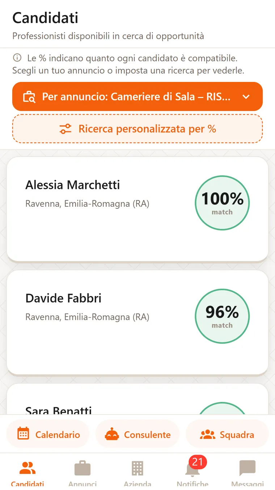
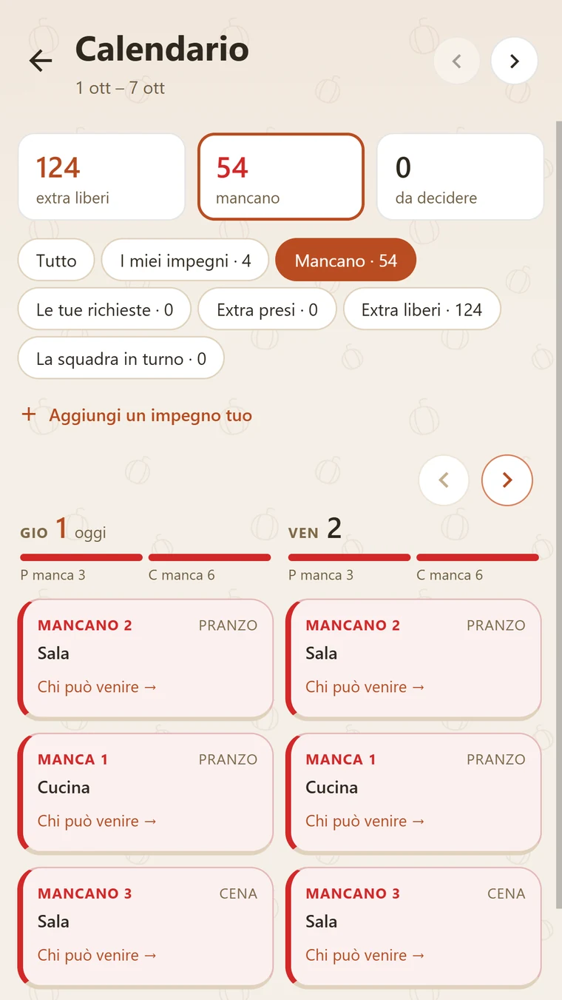

L'app, schermata per schermata
Dieci schermate dell'app vera.
Tocca le voci, oppure scorri: la schermata cambia. Sono catture dell'app, con dati dimostrativi.


Il locale pubblica l'annuncio con contratto e retribuzione. Chi cerca lavoro vede quanto è compatibile, prima di candidarsi.
Tocca le voci, oppure scorri: la schermata cambia. Sono catture dell'app, con dati dimostrativi.
Annunci senza paga, curriculum tutti uguali, colloqui a vuoto, turni scoperti all'ultimo. RistoNext mette il locale e il professionista davanti agli stessi dati, prima che si parlino.
Un numero su ogni annuncio e su ogni candidato: quanto il profilo corrisponde a quello che chiede l'annuncio. Nella vista normale è lo stesso per tutti e due. Il professionista può filtrare gli annunci per soglia.
Turni ed extra nello stesso calendario. Un controllo blocca le doppie prenotazioni.
Chi lavora nel locale, con ruolo, statistiche e valutazioni.
Il locale pubblica la richiesta per una sera. Chi è libero in zona la vede e risponde.
Il modulo chiede tutto quello che serve a chi legge. La retribuzione è un campo obbligatorio.
Due assistenti in chat, in abbonamento. Il Consulente legge i dati del locale e risponde su tutto quello che riguarda la ristorazione. Il Coach legge il profilo del professionista e risponde su lavoro e carriera.
Il locale vede solo chi sta a una certa distanza. La lista cambia ordine, la percentuale no.
Messaggi, note vocali, notifiche per turni, candidature e promemoria.
Carichi il PDF e l'IA scrive le esperienze nel profilo. Si attiva con un acquisto singolo.
Scegli chi nel tuo staff fa cosa, un permesso alla volta.
Le cinque funzioni su cui si regge l'app, spiegate una per una, con la schermata accanto.
La compatibilità confronta quello che chiede l'annuncio con quello che dichiara il profilo: aree e reparti, ruoli, competenze, tipo di locale, affinità di squadra, lingue. Ogni fattore ha un peso. Il risultato è una percentuale che serve a scegliere chi incontrare.
Le persone assunte, con ruolo, turni degli ultimi 30 giorni, extra e valutazioni di rendimento. Da qui il titolare delega: chi gestisce gli annunci, chi la selezione, chi i colloqui, chi gli esiti, chi la squadra, chi i turni.
Il locale accende «Vicino a me» e vede solo chi sta entro 30 o 60 km; sotto ogni candidato compare «a X km». La distanza decide l'ordine e il filtro, non la percentuale, che resta la stessa.

Chi legge l'annuncio sa cosa gli offrono prima di candidarsi: il modulo chiede forma contrattuale e retribuzione, e senza retribuzione non pubblica. Gli stessi campi alimentano la percentuale.
Il locale indica quante persone servono per ogni servizio. Il calendario mostra turni ed extra insieme, segna i posti scoperti e blocca le doppie prenotazioni. Il professionista ha il suo calendario: turni, disponibilità per gli extra e impegni personali con promemoria.

Ti iscrivi come locale, lo descrivi una volta sola e pubblichi. Da qui parte la compatibilità con chi si candida.
Ruoli, aree, competenze, lingue, dove vuoi lavorare. Lo stesso profilo serve per annunci, extra e turni.
Candidature e annunci arrivano ordinati per compatibilità. Vi scrivete in chat e vi incontrate. Turni ed extra si confermano nell'app.
Hai un locale e ti manca una persona, per una stagione o per una sera. Qui la cerchi, la scegli e la metti in turno, nello stesso posto.
Cuoco, cameriere, pizzaiolo, barista, sommelier, manager. Il profilo al posto del CV, le serate extra quando sei libero, e i turni nel tuo calendario.
Sono Michele Ricciardi e RistoNext Strategy & Management è la mia azienda. L'app è il progetto principale. Accanto all'app lavoro per i locali: sito, Instagram, video, campagne, strumenti digitali e consulenza.
Una pagina o un sito completo, con menu, prenotazioni ed eventi. Veloce e leggibile da Google.
Piano dei contenuti, reel, calendario editoriale, risposte ai commenti. Lo stesso lavoro che faccio su @ristonext.
Riprese nel locale e montaggio. Lo stesso stile dei reel di RistoNext: audio pulito, ritmo, una storia.
Campagne con un obiettivo preciso: coperti, prenotazioni, follower. Un rapporto leggibile ogni mese.
Una sessione su cosa fare online per il tuo locale: dove tagliare, dove investire, quali strumenti usare.
Menu digitale con QR, prenotazioni, Google Business, TripAdvisor, TheFork. Li configuro e ti mostro come mantenerli.
Scrivimi: rispondo io, con un preventivo scritto. Senza impegno.
Scaricarla non costa niente. Annunci, candidature, turni, squadra ed extra sono gratis, per il locale e per chi cerca lavoro. Ci sono abbonamenti facoltativi: la chat con un assistente IA, il Consulente per il locale e il Coach per il professionista, è solo in abbonamento. I prezzi li vedi nell'app, prima di qualsiasi acquisto.
Per annunci, candidature, turni, squadra ed extra non paga nessuno: né il locale né chi cerca lavoro. Per iscriversi non serve nessuna carta. Si paga solo quello che scegli tu nell'app, per esempio un abbonamento con l'assistente IA o l'importazione del CV, e si paga dallo store, come per le altre app.
Nel modulo dell'annuncio la retribuzione è un campo obbligatorio: senza, il modulo non pubblica. Chi cerca lavoro la legge sull'annuncio prima di candidarsi. Se trovi un annuncio senza retribuzione, scrivimi e lo controllo.
Su sei fattori, ognuno con un peso: aree e reparti, ruoli, competenze, tipo di locale, affinità di squadra, lingue. Turni e distanza non entrano nel calcolo. Nella vista normale il numero è lo stesso per il locale e per il professionista; se il professionista usa i filtri personalizzati, la percentuale si ricalcola sui filtri che ha scelto.
Il locale. L'app ordina i candidati per compatibilità e vi mette in contatto in chat. Il colloquio, la prova e la scelta restano vostri. Vale anche per chi cerca lavoro: la percentuale aiuta a capire dove candidarsi, poi decide lui.
La scelta è del locale, e non sempre risponde subito. Se scarta la candidatura, ti arriva una notifica con l'esito. Se non risponde, la candidatura resta in attesa. Intanto puoi candidarti ad altri annunci.
Dipende dalla zona, e un numero che non posso dimostrare non te lo scrivo. L'app è nuova: in alcune zone annunci e profili sono ancora pochi. Pubblicare un annuncio o un profilo non costa niente, e resta lì per chi arriva dopo. Il locale può vedere solo chi sta entro 30 o 60 km.
Gli annunci ci sono, ed è la prima cosa che si usa. Accanto ci sono il calendario con turni ed extra, la squadra del locale e la chat. Chi ha un locale tiene tutto in un posto solo. Chi lavora ci trova anche le serate extra.
Il locale vede il profilo che hai pubblicato. Quali dati raccolgo e perché è scritto nella Privacy. L'account lo cancelli dall'app, in Impostazioni, alla voce «Elimina account»: si cancellano il profilo, gli annunci, le candidature e i messaggi. Per gli altri dati vale quello che è scritto nella Privacy. Se non riesci, c'è la pagina Cancella account.
È l'altro lavoro dell'azienda, per i locali che vogliono una mano col digitale. Mi scrivi cosa fa il tuo locale e cosa vorresti ottenere, e ti rispondo io: costi e tempi te li dico a voce, senza impegno. Per usare l'app non serve. Chiedi un preventivo.
Annunci, candidature, turni ed extra non costano niente. Il resto lo scegli nell'app, solo se ti serve.

Per iscriverti non serve nessuna carta. Si paga solo quello che scegli nell'app, dallo store.